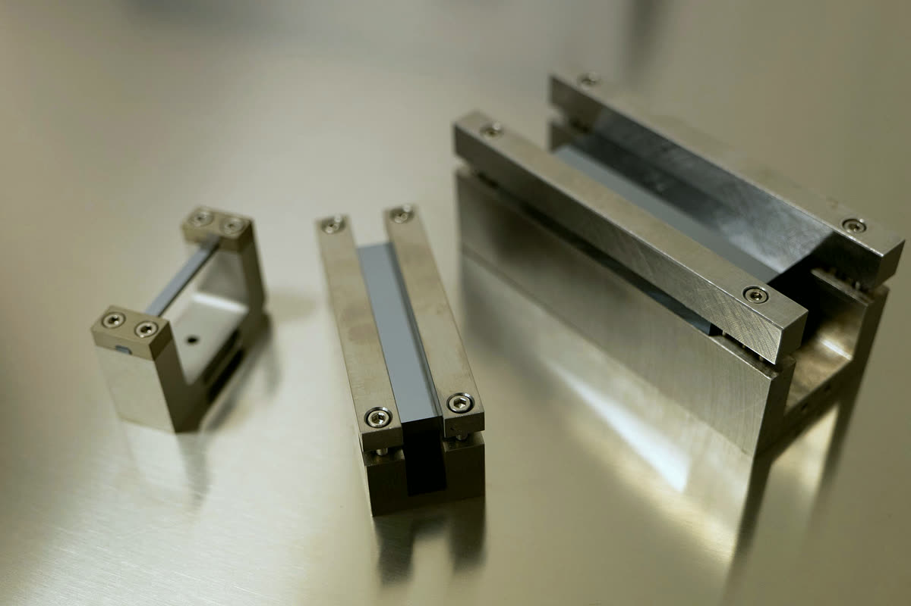
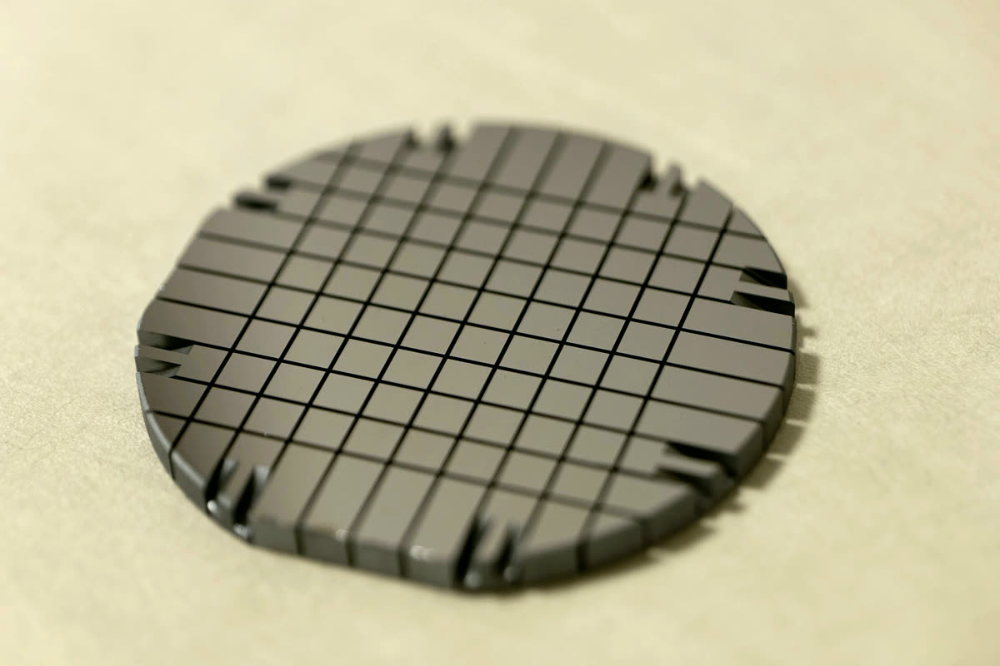
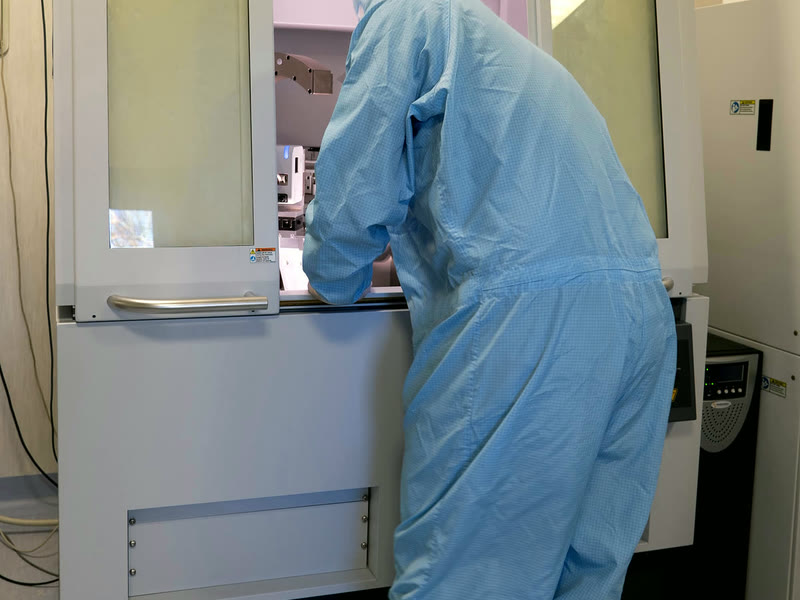
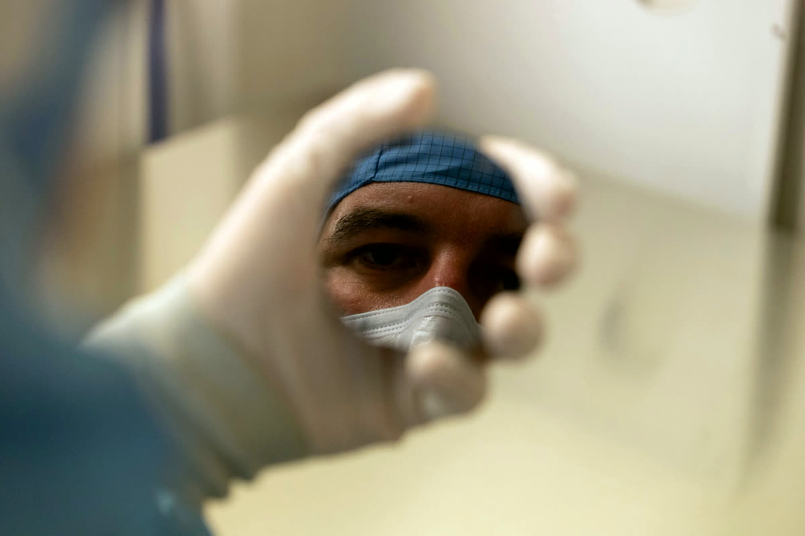

Accelerators and colliders
Crystals that steer beams, make positrons, emit radiation and shorten the showers in calorimeters.
Solid-state physics for high energies and particle physics · University of Ferrara and INFN

A diced silicon wafer, held up in the cleanroom
A joint group of the University of Ferrara and INFN. We design, make and test crystals in our own cleanroom, then take them to accelerators, synchrotrons and underground laboratories. Since 2023 our bent silicon crystals collimate the beams of the LHC at CERN.
Explore the research lines →
We dice, lap, bend and bond silicon, germanium and quartz in our cleanroom, down to nanometre flatness.

Interferometry, X-ray diffraction and profilometry check every crystal to the microradian before it leaves the lab.

Our crystals steer protons in the LHC, focus γ rays for space telescopes, split XFEL pulses and hunt for dark matter.

Crystals that steer beams, make positrons, emit radiation and shorten the showers in calorimeters.

Bent and bonded crystals that select, split and focus photons.

Crystals that catch rare events, and the code that models them.
Monti-Guarnieri P., Paternò G., Sytov A. … Fedeli P., Guidi V., Mazzolari A. et al. · 710, A255 (2026)
Romagnoni M., Bandiera L., Canale N. … Fedeli P., Guidi V., Malagutti L. et al. · 1082 (2026)
Fedeli P., Selmi A., Bandiera L. … Cescato F., Guidi V., Malagutti L. et al. · 21 (2026)
Bachelor, master and PhD theses in data analysis, beam tests, Geant4 simulation and laboratory work. Come and see the lab.
See thesis topics → Tesi in italiano